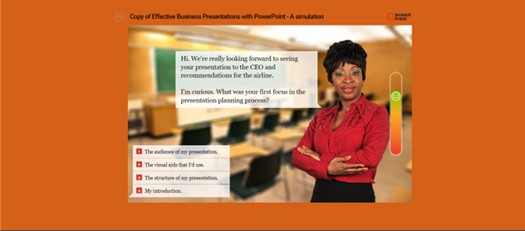

Preparing and presenting an effective lecture
CTTI, goAJK
Zahid Asghar
September …, 2022
“If we want to move from a future we dont want to a future we want, we have to consciously practice bold thinking to achieve the desired future.”

About Me

- Ph.D (Economics) — Pakistan Institute of Development Economics, 2007
- Director, School of Economics (2019-Jan-22)
- Registrar(2020-2021), Quaid-i-Azam University, Islamabad
- Specializations:
- Applied Econometrics
- Data Analyst
- Development Economics
- Research interests : data for policy, data and analytical skill development ,data for policy
How to Give a Killer Presentation HBR
Why do we teach?
What is your mission of teaching?
What is happening when we teach?
What is teaching?
Contents:
Requirements of a good teacher
Types of Teacher
Lecturing
Requirements of Successful Lecturing
Oral presentation Material and Methods
Requirements of Ideal effective lecturing
Characteristics of Good Instructions.
Structure of the lecture
Summary of the requirements for an ideal and effective lecture
Closure
Summary
Conclusion
Good Teacher
Modes of communication
Verbal – speaking words. Voice tone/pitch/volume.
Intonation : sarcastic, sad Word choice : lecture , friends , scientific meeting,
Nonverbal : Knowledge ,skill & eye contact ,. body language, facial expression , gestures.
Written Communication ; Explain ?
Types of Teachers
- A mediocre Teacher : Tells
- A good Teacher : explains
- A superior Teacher : demonstrates
- A great Teacher : inspires
- A great Teacher uses : E C M T
- (Effective Classroom Management Techniques)
polleverywhere
Lecturing
is a process by which knowledge is transferred from the teacher (expert) to young learners(students). Unfortunately, there is no single magical formula for that but still quite possible by following a series of steps and procedures which I hope will be made part of this training.
Lecturer job:lessen student fears and encourage students to pursue deeper understanding
Through several teaching and curriculum approaches
integration during the class;
expanded opportunities for two-way communication;
developing co-ownership of the course along with the students;
alternating lecture with small-group work to aid in learning difficult topics.
Poor slide
Some students seem naturally enthusiastic about learning, but many need-or expect-their instructors to inspire, challenge, and stimulate them:
“Effective learning in the classroom depends on the teacher’s ability … ??
a-Improving teaching provision within the department by identifying models of best practice and promoting new teaching initiatives and curriculum development.
b- Promote links with other departments and/or disciplines where possible.
Favorable classroom atmosphere
Some students seem naturally enthusiastic about learning, but many need-or expect-their instructors to inspire, challenge, and stimulate them:
“Effective learning in the classroom depends on the teacher’s ability … ??
Teaching Modules
a-Improving teaching provision within the department by identifying models of best practice and promoting new teaching initiatives and curriculum development.
b- Promote links with other departments and/or disciplines where possible.
Trans-disciplinary and multidisciplinary
Interactive Learning
Course assessment
Students assessment
Teaching Methods
A thousand teachers, a thousand methods.(Chinese proverb)
Oral Presentation: Methods and Materials
YOUR VOICE
BODY LANGUAGE
APPEARANCE
Speed
Closure
No single teaching method covers everything
Optimal approach features a mixture of instructional methods and learning activities
Optimal mixture changes over time with change in students?
Students involvement in the learning process
Favorable classroom environment
Summary
What one thing did you learn today?
How does today’s lesson impact your understanding?
How would you summarize today’s lecture for someone who wasn’t here?
What was the most significant learning from today’s lecture?
What was the most difficult concept in today’s lecture?
What should I review further in our next lecture?
What was one thing you were unsure about in the lecture ?
Clarify areas of confusion
How to beat death by powerpoint
Effective Presentation
The ability to learn faster than your competitors may be the only sustainable competitive advantage
Peter Senge: The Fifth Discipline
- Expert communication skills
- Superior listening skills
- Deep knowledge and passion for their subject matter
- The ability to build caring relationships with students
- Friendliness and approachability
- Excellent preparation and organization skills
- Strong work ethic
- Community-building skills
- High expectations for all
Digital era education: challenges and oppotunities
- Immense learning sources
- youtube and
- much more
- Galton Board
- Plinko
- Flip based class room teaching
Teaching methods for inspiring students of the future
“The mind is not a vessel that needs filling, but wood that needs igniting.” Plutarch AD46-AD120
“Education is not the learning of facts, but the training of the mind to think.” Abert Einstein 1879-1955
Allow students to engage in:
Choice
Collaboration
Communicationrecent survey by the Pew Research Center,
Critical Thinking
Creativity and greatest of all these is
LOVE
Stay Hungry, Stay Foolish
I am a great TEACHER
BECAUSE…
Great teacher
- Celebrate mistakes
- Appreciate differences
- Relay feedback
- Evaluate themselves
“I have learned that people will forget what yousaid, [people will forget what you] did, but people will never forget how you made them feel.” -Maya Angelou